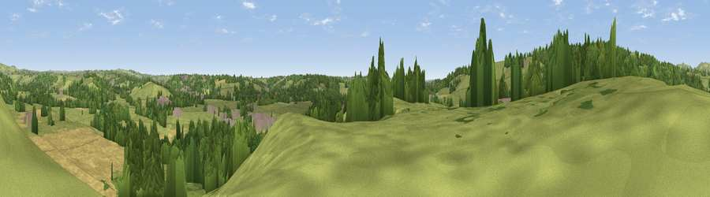

Viewpoint near Upper Mayfield
#35562 in England · top 64% of its area beats it · near Upper MayfieldThe view, rendered

A 360° render of this exact spot computed from the terrain model, tree cover and land cover — summer colours, afternoon light, calibrated against photographs of famous viewpoints. Real trees, hedges and buildings will differ in detail.
The panorama
Grey silhouette: terrain skyline in each direction (720 bearings, Earth curvature and refraction included). Dashed green: skyline with trees (+15 m) and buildings (+8 m) as obstacles. Blue strip: how far the ground is visible on each bearing.
Where the view opens
Wedge length = distance to the farthest visible ground on that bearing (vegetation-aware). Rings at 10, 25 and 50 km.
What fills the view
54% grassland · 24% woodland · 19% cropland · 3% built-up
Angular shares of the visible panorama (visual magnitude), not map area. Landscape diversity 0.48 (0–1 Shannon).
Key numbers
More beautiful places nearby
The staircase of upgrades: each row has a higher view potential than everything closer. Driving times are estimates from straight-line distance, calibrated against real road routing — check an actual route before setting out.
| Place | Direction | Drive | Score |
|---|---|---|---|
| Viewpoint near Ellastone | SSW · 4 km | ~10 min | 43.0 |
| Viewpoint near Wootton | W · 5 km | ~11 min | 66.1 |
| Viewpoint near Wootton | W · 5 km | ~12 min | 74.4 |
| Viewpoint near Wootton | W · 6 km | ~13 min | 74.8 |
| Tissington Hill | N · 7 km | ~14 min | 75.5 |
| Viewpoint near Mow Cop | WNW · 32 km | ~49 min | 78.9 |
| Viewpoint near Mow Cop | WNW · 32 km | ~49 min | 80.2 |
| Viewpoint near Little Wenlock | SW · 64 km | ~87 min | 84.2 |
53.01131, -1.76931 · source: screening · position refined by local search. Computed location — check access rights before visiting.